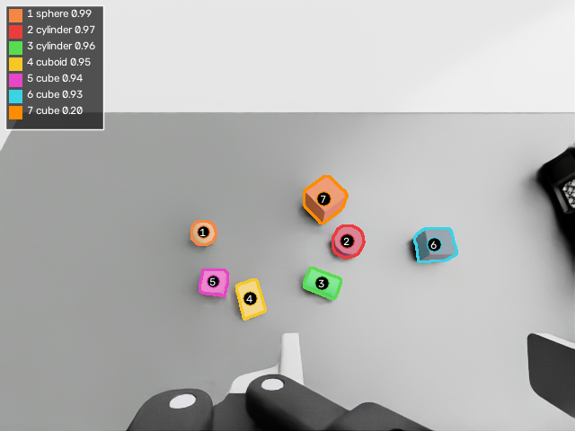
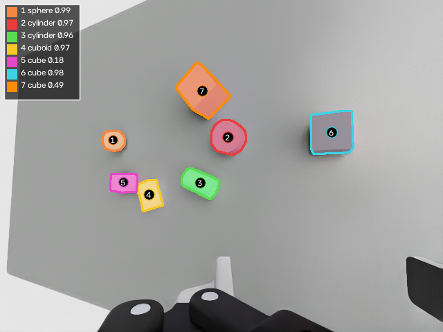

20260930_181528 | 7 object(s) in view A | views: A, B | total 14.6 s. Same number and color = same object in every picture and table.
Second view: visited because #7 cube conf 0.20.


| # | class | YOLO conf | center X , Y , Z (m) stage measured error = stage − measured (mm) |
height (mm) stage measured error % |
|---|---|---|---|---|
| 1 | sphere | 0.99 | -0.7002 , 0.0259 , 0.6202 -0.7005 , 0.0264 , 0.6200 +0.31 , -0.46 , +0.22 | 50.0 49.6 +0.80% |
| 2 | cylinder | 0.97 | -0.4150 , 0.0110 , 0.6102 -0.4151 , 0.0108 , 0.6102 +0.11 , +0.16 , +0.01 | 30.0 30.1 -0.33% |
| 3 | cylinder | 0.96 | -0.4703 , -0.0714 , 0.6152 -0.4704 , -0.0714 , 0.6149 +0.12 , -0.04 , +0.37 | 41.7 39.3 +5.76% |
| 4 | cuboid size 60×40×20 mm | 0.95 | -0.6017 , -0.0982 , 0.6052 -0.6016 , -0.0982 , 0.6052 -0.06 , -0.00 , +0.02 | 20.0 20.0 +0.00% |
| 5 | cube size 40×40×40 mm | 0.94 | -0.6688 , -0.0708 , 0.6152 -0.6686 , -0.0708 , 0.6152 -0.14 , +0.01 , +0.02 | 40.0 40.0 +0.00% |
| 6 | cube size 50×50×50 mm | 0.93 | -0.2500 , -0.0000 , 0.6202 -0.2500 , -0.0003 , 0.6202 -0.01 , +0.27 , +0.01 | 50.0 50.1 -0.20% |
| 7 | cube low-score YOLO candidate confirmed by depth size 60×60×60 mm | 0.20 | -0.4585 , 0.0978 , 0.6252 -0.4585 , 0.0978 , 0.6252 -0.03 , +0.00 , +0.01 | 60.0 60.1 -0.17% |
Class: view A; view B's class is used only when A's YOLO confidence < 0.7. cube vs cuboid is decided by the depth-measured edge ratio (< 1.15 → cube). Stage values are read from the stage for comparison only; the method never uses them.
| # | class | YOLO conf | center X , Y , Z (m) stage measured error = stage − measured (mm) | height (mm) stage measured error % |
|---|---|---|---|---|
| 1 | sphere | 0.99 | -0.7002 , 0.0259 , 0.6202 -0.7012 , 0.0261 , 0.6201 +0.96 , -0.12 , +0.10 | 50.0 49.9 +0.20% |
| 2 | cylinder | 0.97 | -0.4150 , 0.0110 , 0.6102 -0.4148 , 0.0110 , 0.6102 -0.18 , -0.02 , +0.02 | 30.0 30.0 +0.00% |
| 3 | cylinder | 0.96 | -0.4703 , -0.0714 , 0.6152 -0.4703 , -0.0715 , 0.6147 +0.01 , +0.07 , +0.51 | 41.7 39.1 +6.24% |
| 4 | cuboid | 0.97 | -0.6017 , -0.0982 , 0.6052 -0.6017 , -0.0982 , 0.6052 -0.04 , +0.02 , +0.03 | 20.0 20.0 +0.00% |
| 5 | cube | 0.18 | -0.6688 , -0.0708 , 0.6152 -0.6687 , -0.0708 , 0.6152 -0.09 , +0.01 , +0.03 | 40.0 40.0 +0.00% |
| 6 | cube | 0.98 | -0.2500 , -0.0000 , 0.6202 -0.2500 , -0.0000 , 0.6202 -0.01 , +0.01 , +0.02 | 50.0 50.0 +0.00% |
| 7 | cube | 0.49 | -0.4585 , 0.0978 , 0.6252 -0.4585 , 0.0978 , 0.6252 -0.00 , +0.01 , +0.03 | 60.0 60.0 +0.00% |
| view | class | n | mean |ΔX| | mean |ΔY| | mean |ΔZ| | max |ΔX| | max |ΔY| | max |ΔZ| | max |height err| |
|---|---|---|---|---|---|---|---|---|---|
| A | cube | 3 | 0.06 | 0.09 | 0.01 | 0.14 | 0.27 | 0.02 | 0.20% |
| A | cuboid | 1 | 0.06 | 0.00 | 0.02 | 0.06 | 0.00 | 0.02 | 0.00% |
| A | cylinder | 2 | 0.12 | 0.10 | 0.19 | 0.12 | 0.16 | 0.37 | 5.76% |
| A | sphere | 1 | 0.31 | 0.46 | 0.22 | 0.31 | 0.46 | 0.22 | 0.80% |
| B | cube | 3 | 0.03 | 0.01 | 0.03 | 0.09 | 0.01 | 0.03 | 0.00% |
| B | cuboid | 1 | 0.04 | 0.02 | 0.03 | 0.04 | 0.02 | 0.03 | 0.00% |
| B | cylinder | 2 | 0.10 | 0.04 | 0.27 | 0.18 | 0.07 | 0.51 | 6.24% |
| B | sphere | 1 | 0.96 | 0.12 | 0.10 | 0.96 | 0.12 | 0.10 | 0.20% |
setup: 0.1 | A_move: 2.7 | A_capture: 0.5 | A_yolo: 0.1 | B_move: 2.7 | B_capture: 5.5 | B_yolo: 0.1 | return: 2.7 | total: 14.6